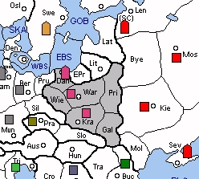

POLAND (P) has access to relatively few neutrals, but it has one of the few "natural" SCs in Lithuania. Far from being a minor power, the reconstituted Kingdom of Poland can be a powerful threat to both USSR and Germany. Expanding south into the Balkans seems appealing but this will often be impractical, as Poland is likely to be drawn into a war sooner than later.
Early diplomatic efforts should be focused on locating an ally to join the fight against Poland’s initial target. As in the Modern variant, the German-Polish border has plenty of buffer zones, thus USSR is the more likely choice as Poland’s opponent. On the other hand, Poland can launch an early attack on Germany, possibly capturing Berlin in 1929 if Germany over-extends itself. Whether attacking or being attacked by USSR, Pripet is a critical region to control. If USSR takes Pripet in 1929, then Poland will find itself in deep trouble.
Spain is the strongest minor in the game and wields substantial influence in the west. Whether or not France is hostile, Spain can often grab Portugal and earn itself an extra build. France must forfeit Switzerland to attack Spain and will probably welcome friendship with Poland in order to keep Germany at bay. Even if Poland succumbs to a combined German-USSR attack, the Polish government might live in exile in sunny Spain for several years to come.
|
 |
MINOR (Basic): Spain SUGGESTED MINORS (Advanced): Czechoslovakia, Yugoslavia, Rumania POTENTIAL ALLIES: BRITAIN versus France and Germany TURKEY versus USSR |
Suggested Openings for Poland:
Warsaw-viour: |
A KRA-PRI, A WAR-LIT, F DAN-EBS |
|
Poland seeks to preserve itself and maintain neutrality by bouncing the USSR in Pripet and establishing control of the Eastern Baltic. This opening ensures the capture of Lithuania but risks Krakow if the Pripet bounce fails. |
|
German Attack: |
A KRA-SIL, A WAR-LIT, F DAN-PRU |
|
This decisive combination will probably result in the capture of Berlin. However, the eastern approaches will be vulnerable to a Soviet attack. |
|
Soviet Attack: |
A KRA-GAL, A WAR-PRI, F DAN-EPR |
|
This move commits Poland to a protracted offensive against the Soviet Union. Long-term success requires a distracted Germany and a helpful Turkey. |
In terms of allies, Britain is a good initial choice. The two nations complement each other – Britain is a naval power and Poland is a land power – and both can attack Germany or USSR (to a lesser extent) during the early stages of the game. Meanwhile, Poland’s Spanish fleet is positioned nicely to keep France from undermining Britain. To achieve a lasting peace, the two nations must arrive on a suitable disposition of Germany and Scandinavia. Britain might prefer to exchange some SCs for Spain and Portugal, but Poland should be fairly reluctant to give up its Iberian ace-in-the-hole.
As an alternative, Poland might choose to work with Turkey. Both nations can launch a lethal attack on USSR with little interference from their neighbours. Once USSR is defeated, Poland must be concerned about the Sultan establishing a strong corner position. To balance this threat, Poland should seek total control of USSR and establish its own corner position in the northeast. Turkey should be encouraged to occupy the Balkans, build a large fleet, and then invade Italy. However, a stab of Poland will be more likely if Turkey develops a large army.
Early in the game, Poland must cope with the lethal combination of Germany-USSR. This threat will quickly melt away if Britain or France pounces on Germany or if Turkey surprises USSR. However, Poland should work hard to gain the corner position occupied by USSR before Turkey grabs it.